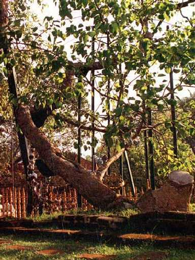

Anuradhapura
仏教とギリシャ彫刻がガンダーラで融合し仏像が出現する以前は仏舎利を奉納した仏塔が信仰の対象となっていた ここに残る仏塔６基は紀元前２世紀以降建てられ今もなお引き継がれている

Sri Maha Bodhi Tree
釈迦が悟りを開いたインドブッダガヤの菩提樹の枝を挿木した菩提樹と言われている 樹齢は２６００年以上 サンスクリプト語で悟りを意味するボーディーから菩提樹と名付けられた